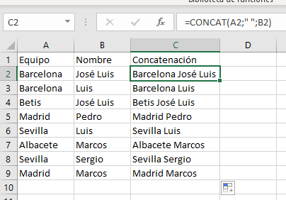

Las funciones en Excel se utilizan para una variedad de propósitos, como sumar números, encontrar promedios, buscar y extraer información, realizar operaciones matemáticas avanzadas, manipular texto, y mucho más. Estas funciones están diseñadas para ahorrarte tiempo y minimizar errores al realizar tareas repetitivas o complicadas.
📊 📊 📊 📊
Existen cientos de funciones en Excel, cada una con su propósito único. Y aqui te las enseñaremos
| Nombre | Descripcion | Uso | Formula | Ejemplo |
|---|---|---|---|---|
| Contar | La función CONTAR cuenta el número de celdas que contienen números en un rango especificado. | Se utiliza para contar la cantidad de celdas que tienen valores numéricos en un rango. Por ejemplo, si quieres contar cuántas celdas en el rango A1:A10 contienen números | =CONTAR(A1:A10) | |
| Concatenar | La función CONCATENAR combina múltiples cadenas de texto en una sola cadena | Se utiliza para unir el contenido de varias celdas o texto | =CONCATENAR(A1, " ", B1) |  |
| Hoy | La función HOY devuelve la fecha actual | Se utiliza para obtener la fecha actual sin la necesidad de ingresarla manualmente. | =HOY() | |
| Buscarh | La función BUSCARH busca un valor en la primera fila de un rango y devuelve un valor en la misma columna de una fila especificada | Similar a BUSCARV, pero opera en horizontal. Es útil para buscar información en tablas que están organizadas por filas | =BUSCARH("Producto", A1:Z10, 3, FALSO) |
| Nombre | Descripcion | Uso | Formula | Ejemplo |
|---|---|---|---|---|
| Sumar.si.conjunto | Esta función suma los valores que cumplen con un conjunto específico de condiciones. | útil cuando necesitas sumar valores que cumplen con múltiples criterios. | =SUMAR.SI.CONJUNTO(RangoDeIngresos, ">1000", RangoDeMeses) | |
| Indice y Coincidir | Utilizando estas funciones en conjunto, puedes buscar y recuperar un valor en una tabla mediante una fila y columna específicas | útil para buscar valores en grandes conjuntos de datos. | =ÍNDICE(RangoDePrecios, COINCIDIR("NombreProducto", RangoDeNombres, 0)) | |
| Si.error | Esta función permite gestionar errores en una fórmula, devolviendo un valor predeterminado si se encuentra un error | Ayuda a manejar situaciones donde podría haber errores, proporcionando un valor alternativo | =SI.ERROR(A1/B1, "Error en la división") | |
| Filtrar | La función FILTRAR permite filtrar datos basándose en criterios específicos. | Es útil para extraer datos que cumplen con ciertas condiciones. | =FILTRAR(RangoDeDatos, Criterios) |
Estas funciones son solo ejemplos, pero muestran la versatilidad y potencia que las funciones de Excel ofrecen para manipular y analizar datos de manera avanzada. La elección de funciones dependerá de la naturaleza de tus datos y de las operaciones que necesitas realizar.
Actualizada el 17/02/2024